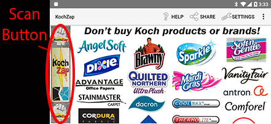
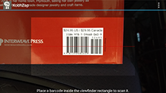
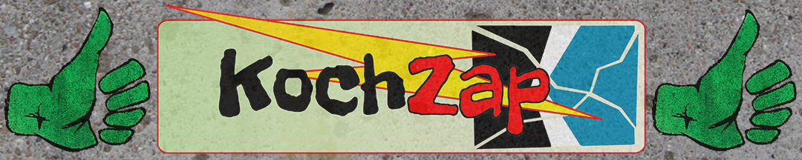
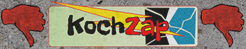
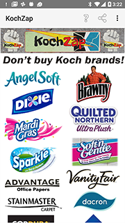

Welcome to the KochZap App
We help you keep the Koch Brothers out of your wallet!
Our simple app has 2 ways to help you identify products from Koch Industries or made from one of their brands; scan a product or simply check for a Koch brand/logo. Most of the time simply referring to "Koch Brands/Logos to avoid" listing can steer you away from their products. You can always use the scanning function to verify an individual product is not from a Koch Industries company. You will quickly learn which products to avoid in your lifestyle, and then only have to use the Koch Zap app for an occasional reminder.
- Scan a Product - You can use the KZ app scan function on a typical product UPC label.

To initiate a product scan simply press the KochZap button at the top or left of the screen.

The first time scanning will require allowing the use of your camera. Once in the scanning mode
you will see a scan widow in which to center the product UPC code.

You can use your Volume Up/Down buttons to switch the camera light on/off, which can help in low light settings.
If the UPC company code for the product scanned is not associated with Koch Industries you will get the Thumbs Up response.

You will get the Thumbs Down response when the UPC code registers as a Koch Industries related company.

- Check Koch Brand Logos - The lower or right-hand portion of the KZ app displays a scrollable image composed of many Koch Industries product and brand logos.

Simply refer to this list when shopping and avoid these brand names and products made using Koch branded materials.
Given the dynamic nature of Koch Industries businesses, the KochZap app can't guarantee accuracy in evaluating products, though we do our best to keep up with changes. Much of Koch Industries sales are to other companies, providing materials for their products hence a scan will not show a relationship. That is why it is important to become familiar with Koch brand logos, like Dacron and Stainmaster, so as to avoid products made from them.
More information about the KZ app, Koch Industries, their subsidiaries and facilities, and news related to them can be found at our website - kochzap.com
For more details on scanning barcodes see ZXing project help
The official KochZap Android app , branched from the open source ZXing project:
https://github.com/davidldawes/zxing